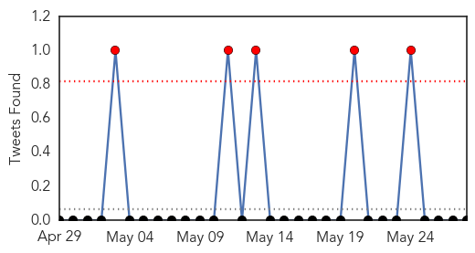
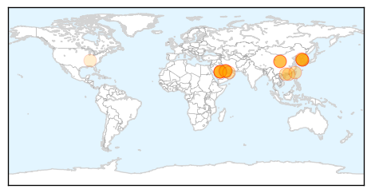
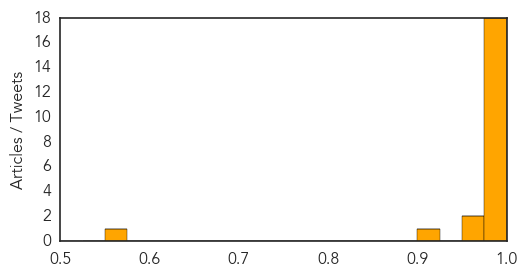

MERS
30-Day Web Trend
7 alerts, 2 warnings

30-Day Twitter Trend
5 alerts, 0 warnings

Article Locations
Article Confidences
Top Articles:
- 1.000
- Mers virus: Concern growing in South Korea
- 0.999
- The World On Arirang
- 0.999
- DH closely monitors two additional MERS cases in Korea
- 0.998
- South Korea Confirms Third Case of MERS Virus; 64 Isolated
- 0.995
- Taiwan rules out MERS-CoV case: CDC
- 0.994
- Taiwan to send doctor to ...｜Society｜WCT
- 0.993
- South Korea reports seven Mers cases; one suspect travels to China, East Asia News & Top Stories
- 0.993
- S.Korea's tally of MERS cases at 7; one suspected patient heads to China
- 0.993
- S. Korea reports seven MERS cases, one suspect flies to China
- 0.992
- Seoul confirms seventh MERS case
- 0.991
- MERS suspect case in South Korea travelled to China
- 0.989
- More MERS cases in SKorea as outbreak threatens China
- 0.988
- Suspected S. Korean Infectee with MERS Goes to China
- 0.986
- South Korea's tally of MERS cases at seven
- 0.986
- South Korea's tally of MERS cases at 7; 1 suspected patient heads to China
- 0.983
- South Korea's tally of MERS cases at seven; one suspected patient heads to China, Others news, Health News, AsiaOne YourHealth
- 0.983
- S.Korea's tally of MERS cases at 7; one suspected patient heads to China
- 0.981
- South Korean MERS cluster grows; Saudi Arabia reports case
- 0.970
- S China Reports First Suspected Case of Imported MERS
- 0.958
- More MERS cases in South Korea
- 0.913
- Gov't prepares to deal with MERS outbreak
- 0.562
- Deadly viruses lurking in Tennessee labs
Top Tweets:
-
No tweets found for May 28, 2015
Unknown
30-Day Web Trend
0 alerts, 0 warnings

30-Day Twitter Trend
1 alerts, 0 warnings

Article Locations


Article Confidences

Top Articles:
- 1.000
- S Korea on alert over spread of MERS, news, Health News, AsiaOne YourHealth
- 0.998
- KBS World Radio
- 0.996
- Man who came into contact with MERS patient insists on flying
- 0.995
- Suspected MERS patient flies to China-INSIDE Korea JoongAng Daily
- 0.994
- (EDITORIAL from Korea JoongAng Daily on May 29)
- 0.994
- (EDITORIAL from Korea JoongAng Daily on May 29)
- 0.991
- SK businessman is Chinaâs first MERS case
- 0.991
- S. Korea reports seven MERS cases, one suspect flies to China
- 0.987
- (5th LD) S. Korea confirms two more cases of MERS
- 0.985
- South Korean man travels to China despite MERS infection
- 0.985
- The Chosun Ilbo (English Edition): Daily News from Korea
- 0.984
- South Korean MERS patient quarantined in China
- 0.978
- (2nd LD) S. Korea confirms two more cases of MERS
- 0.977
- Roundup: MERS-infected S.Koreans rise to 7, 1 suspect leaves for China
- 0.977
- (4th LD) S. Korea confirms two more cases of MERS
- 0.977
- MERS-infected S.Koreans rise to 7, 1 suspect leaves for China
- 0.970
- (LEAD) Suspected S. Korean MERS case leaves for China
- 0.968
- Valley Fever new health risk in Washington
- 0.965
- The World On Arirang
- 0.964
- Suspected South Korean MERS patient leaves for China
- 0.964
- Health officials sound alarm for Valley Fever
- 0.960
- VALLEY FEVER FUNGUS POSES NEW HEALTH RISK TO WASHINGTON RESIDENTS
- 0.939
- H5N1 bird flu confirmed on two farms in Ghana
- 0.936
- S. Korea reports seven MERS cases, one suspect flies to China
- 0.917
- Chicago Tribune
- 0.917
- Chicago Tribune
- 0.917
- Chicago Tribune
- 0.917
- Chicago Tribune
- 0.917
- Chicago Tribune
- 0.917
- Chicago Tribune
- 0.917
- Chicago Tribune
- 0.917
- Chicago Tribune
- 0.917
- Chicago Tribune
- 0.917
- Chicago Tribune
- 0.917
- Chicago Tribune
- 0.917
- Chicago Tribune
- 0.917
- Chicago Tribune
- 0.917
- Chicago Tribune
- 0.917
- Chicago Tribune
- 0.917
- Chicago Tribune
- 0.917
- Chicago Tribune
- 0.917
- Chicago Tribune
- 0.904
- What doctors can learn from the recent salmonella outbreak
- 0.876
- What You Need to Know About Anthrax Infections
- 0.859
- Chronic Wasting Disease Found In Michigan Deer
- 0.829
- Live Anthrax Accidentally Shipped To 9 States
- 0.818
- What You Need to Know About Anthrax Infections
- 0.802
- Suspected case of Middle East Respiratory Syndrome reported in S. China
- 0.799
- Wide use of antibiotics allows bacteria to flourish;
- 0.784
- Delhi hospitals asked to treat heatstroke patients on priority
Showing top 50 articles...
Top Tweets:
-
No tweets found for May 28, 2015